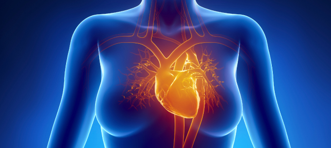

Estas sustancias, desde el punto de vista químico, son aldehídos o cetonas polihidroxilados, lo que significa que dentro de su estructura están compuestas por un grupo formilo o u grupo oxo, y varios grupos hidroxilo.
De forma literal, la palabra “carbohidrato” significa “hidrato de carbono” ya que su fórmula general es (CH2O)N; por ejemplo, la glucosa: C2H12O6. Actualmente, el nombre carbohidrato lo empleamos para designar los compuestos que son aldehídos o cetonas polihidroxiladas, o bien, sustancias que por hidrólisis producen los compuestos.
Monosacáridos En relación con el grupo funcional, es posible clasificar a los monosacáridos en grupos:
Fructosa: Se trata de una cetohexosa. Es un isómero de la glucosa y la galactosa. La fructosa se puede encontrar en frutas y en la miel. Es el azúcar más dulce que se conoce, pero tiene un aporte calórico menos que la glucosa (4 kcal/g), ya que sólo nuestro cuerpo puede absorber alrededor del 30% de lo ingerido, por tal motivo se le usa como edulcolorante para diabéticos. Industrialmente se obtiene por isomerización enzimática de la glucosa con la enzima glucosaisomerasa.
Ribosa (C3H10O5): Es una aldopentosa presente en el adenosin trifosfato (ATP), que es una molpecula de alta energía química empleada por el organismo. La ribosa y uno de sus derivados, la desoxirribosa, son componentes de los ácidos nucleicos ARN y ADN respectivamente. En la actualidad existen indicios de que la ribosa mejora la tolerancia al ejercicio en las personas que padecen angina de pecho. 
Disacáridos Sacarosa (C12H12O11): La característica principal de este disacárido es que está formado por una unidad de glucosa y otra de fructosa. Comúnmente la conocemos como azúcar de mesa. La sacarosa la podemos encontrar libre en la naturaleza; se obtiene principalmente a partir del procesamiento de la caña de azúcar, éste contiene del 15% a 20% de sacarosa; y de la remolacha dulce, que contiene entre un 10% a 17%. A este carbohidrato disacárido se le ha denominado azúcar invertido por su capacidad de levorrotación de la fructosa. Es el edulcorante más utilizado. Estudios realizados recientemente indican que contribuye a evitar la proliferación bacteriana en heridas infectadas.
Lactosa (C11H12O11): Disacárido formado por glucosa y galactosa. Generalmente se le conoce como el azúcar de la leche, pues del 5% al 7% de la leche humana es lactosa; mientras que en la leche de vaca está presente del 4% al 6%. Este disacárido se emplea en la industria alimentaria para la elaboración de leche en polvo, quesos, yogurt y helados. Al actuar ciertos microorganismos sobre la leche, ésta toma un sabor agrio, e incluso puede formarse un cuajo en ella, ésta es la razón de proteger la leche mediante la refrigeración.
Al hidrolizarse fácilmente, también su digestión es rápida, motivo por el cual es utilizada como endulzante de alimentos infantiles y en bebidas como la leche malteada, además de ser una materia indispensable en la elaboración de la cerveza.
Polisacáridos
Dentro de los polisacáridos más importantes, podemos considerar los siguientes: Almidón: Este carbohidrato polisacárido tiene la característica de estar formado por unidades de glucosa, por lo tanto se considera un polímero de ésta. Lo podemos encontrar en cereales como maíz, arroz y trigo, también se encuentran en las papas. Este polisacárido es la principal reserva energética en los vegetales. Es capaz de proporcionar de 70% a 80% de las calorías engeridas por el ser humano. Está formado por amilosa y amilopectina. Una diferencia característica respecto de los demás polisacáridos es que éste se presenta en forma de gránulos, relativamente densos e insolubles en agua fría. Se emplea en la industria alimentaria como aditivo, conservante para el pan, y para dar consistencia a los embutidos y salsas. Se utiliza también en la preparación de embalajes de espuma y como alternativa biodegradable de los envases de PET. Celulosa: Este polisacárido, al igual que el almidón, es un polímero de glucosa. El tipo de enlace que une las moléculas de glucosa en la celulosa es diferente del enlace que une a las del almidón, ésta es la razón por la cual la celulosa no puede ser utilizada por el organismo humano como alimento, ya que carecemos de las enzimas necesarias para romper ese tipo de enlace, sin embargo, posee un papel importante como fibra en el intestino grueso. La celulosa es el polisacárido más abundante y resistente de la pared celular de las plantas. Es utilizada como materia prima en la elaboración de papel, de tejidos de fibras naturales y de telas sintéticas como l rayón; con ella también se elabora algodón hidrófilo (algodón de uso médico por su capacidad de absorción), asimismo, se emplea en la fabricación de películas fotográficas y materiales plásticos. La celulosa se obtiene principalmente de la madera.
Glucógeno: Éste polisacárido es considerado la reserva de carbohidratos en el reino animal, pues se almacena especialmente en el hígado y en los músculos. Conforme se convierte en glucosa, la cual se oxida para producir energía. Funciones de los carbohidratos Metabolismo de carbohidratos
Glucólisis: Se lleva a cabo en el citosol o citoplasma celular, donde cada molécula de glucosa, con sus 6 átomos de carbono, origina dos molpeculas de piruvato (de 3 átomos de carbono). Se invierten dos moléculas de ATP pero se generan cuatro. El balance neto de ATP es de 2. Respiración celular: Sucede dentro de la mitocondria de las células eucariotas cuando el ambiente es aerobio y el piruvato se transforma en dióxido de carbono, liberando la energía almacenada en los enlaces piruvato y atrapándola en el ATP. El balance neto es de 36 ATP. Fermentación: Tiene lugar en las células procariotas, en el citosol celular cuando el O2 está ausente. Además de producir CO2 se producen otras moléculas como el ácido láctico o el etanol. Si se produce etanol o alcohol etílico, se le llama “fermentación alcohólica”, en cambio, si lo que se produce es ácido láctico, entonces se llama “fermentación láctica”. El balance neto de ATP es de 2.
(Quiroz, 2014) |
||||||||||||||||||||||||||||||||||||||||||||||||